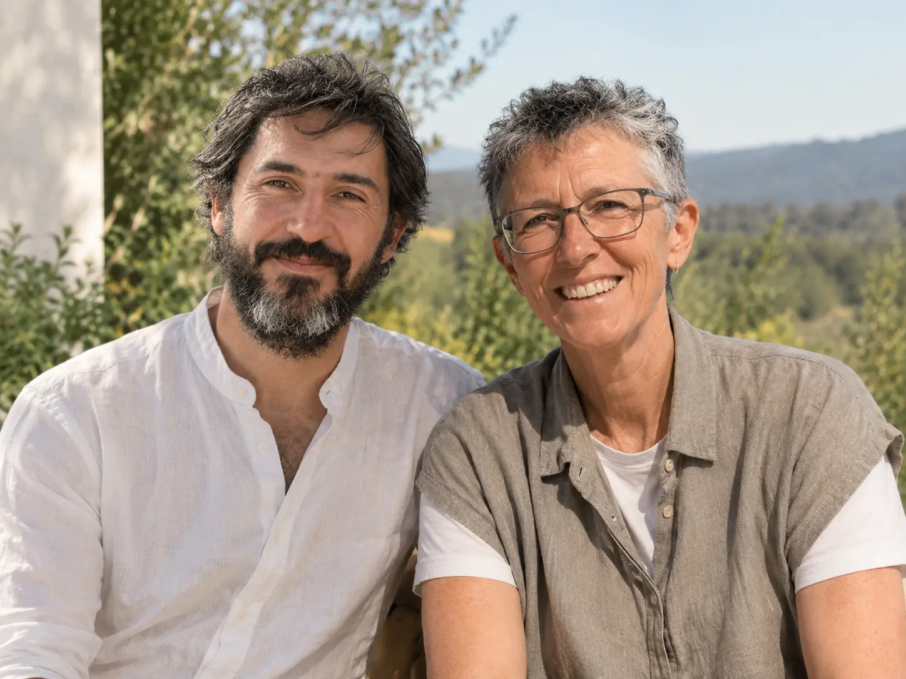

<!-- Sección "Quiénes somos" guardada para usar más adelante (sacada del sitio en v2.9).
     Para volver a ponerla:
       1. Pegar este bloque en index.html justo antes de </main>.
       2. Mover _guardado/isa-y-dario.webp a la carpeta del sitio (al lado de index.html).
       3. Agregar en el menú: <a href="#nosotros">Quiénes somos</a>
     Los estilos (styles.css, "quienes somos") y la animación de la firma (anim.css / anim.js) siguen en su lugar.
     También está entera en git: etiqueta "quienes-somos" (git checkout quienes-somos). -->

<!-- QUIÉNES SOMOS -->
<section id="nosotros" class="section about">
  <div class="wrap two about-in">
    <figure class="photo">
      
    </figure>
    <div>
      <div class="eyebrow">Quiénes somos</div>
      <h2>Somos <em>Isa y Dario</em></h2>
      <p class="lead">Apasionados de la terapia somática, con muchas ganas de contribuir al campo.</p>
      <p class="muted">Campo Somático es nuestra manera de aportar a la comunidad lo que más valoramos de este oficio: seguir aprendiendo con otros. Nos encantaría construirlo contigo.</p>
      <div class="sign"><span>Isa y Dario</span></div>
    </div>
  </div>
</section>

